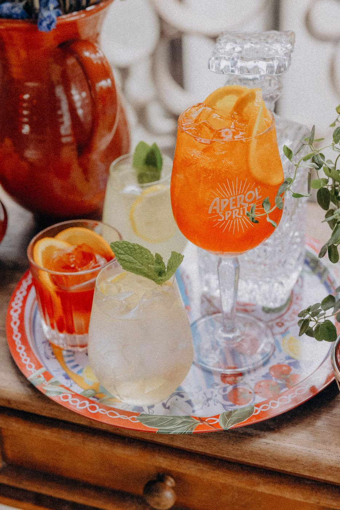
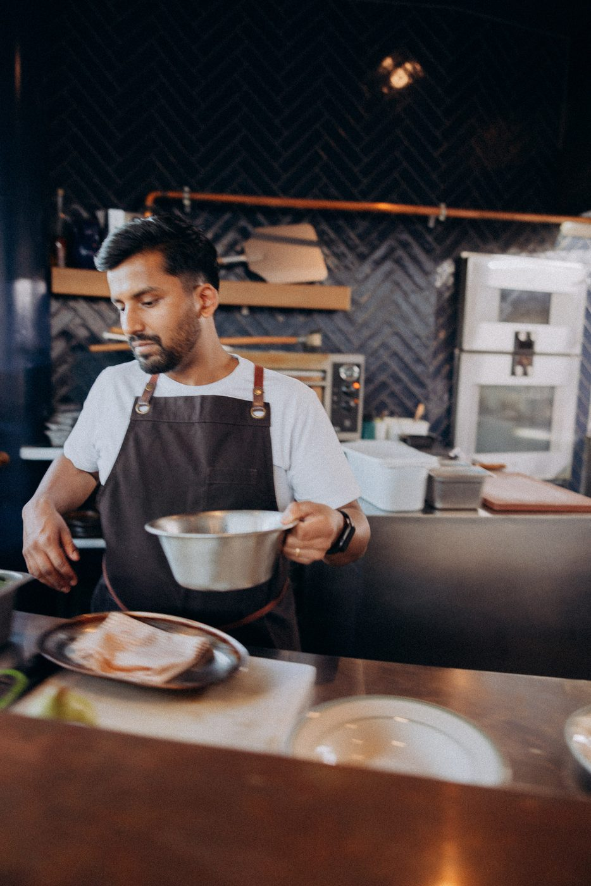
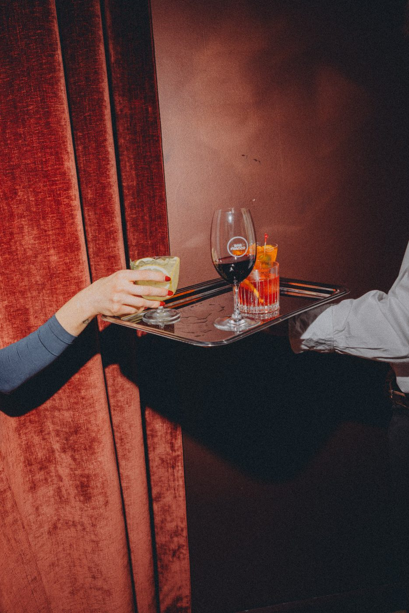
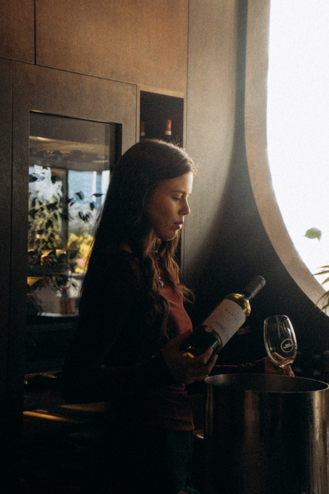

Chapter one
Eat
House made pasta, generous Italian food and an open kitchen at the heart of the room. Rolled in the morning, on your table by night, and gone before anyone admits to a second serve.


Christchurch · Two levels · Open daily from 4pm
House made pasta. Negroni. Aperitivo. Late nights.
Chapter one
House made pasta, generous Italian food and an open kitchen at the heart of the room. Rolled in the morning, on your table by night, and gone before anyone admits to a second serve.
Chapter two
Negroni, aperitivo, vino and cocktails made for staying longer than planned. The bar stirs, the room fills, and somebody moves the table to make space.

Chapter three
Private dining, cocktail parties, weddings and full venue events across two levels. Bring thirty. Bring the whole building. We have done both this month.

The venue

Level 1
Darker, louder, closer. Cocktails stirred in front of you, records on, and the kind of evening that starts as one drink after work and ends somewhere near midnight.

Level 2
A warm open kitchen, house made pasta, candlelight and long tables built for the kind of dinner nobody wants to be the first to leave.
Food & drink


Aperitivo starts here.


Some places want to be seen. Bar Franco wants to be felt.
Private events


Date, numbers, the reason. Two lines is plenty to start.
A level or the whole building, seated or standing, food and drink built to suit.
We handle the rest. You get to be a guest at your own party.
Moments at Franco








Drag or scroll sideways